Mesh manipulation
This demo descibes the NiHu mesh structure in details and discusses functions used to perform basic mesh manipulations.
Contents
The mesh structure
The NiHu mesh is stored in a structure mesh with the fields
- mesh.Nodes
- mesh.Materials
- mesh.Properties
- mesh.Elements
The rows of the Nx4 matrix mesh.Nodes contains the nodes of the mesh:
mesh.Nodes = [
% ID x y z
1 0 0 0
3 1 0 0
5 1 1 0
14 0 1 0
2 2 0 0
];
The ID's in the first column have to be defined as unique positive integers.
The matrix mesh.Materials is built up as follows:
mesh.Materials = [ % ID type rho c unused 3 1 1.25 340 0 0 % E rho nu beta 5 2 3e8 2000 0.33 0.02 ];
where the first column contains positive integer unique IDs, the second column contains the material type identifier, and the further columns contain material properties. A shown in the example, the material type identifier 1 corresponds to a fluid material with given mass density 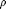 and speed of sound 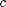, the identifier 2 describes a linear elastic material with defined Young's modulus 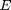, mass density , Poisson/s ratio 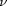 and damping 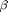.
The matrix mesh.Properties describes the used properties. This matrix is unused in the current phase of development, and has to be initialized as
mesh.Properties = 1;
where the value is the identifier of the single property used in the mesh.
The mesh elements are stored in the matrix mesh.Elements as follows:
mesh.Elements = [
% ID type MatID PropID node IDs
12 24 3 1 1 3 5 14
14 12 5 1 5 2 0 0
];
The first column is the unique positive integer element identifier. The second dolumn contains the element type, followed by the element's material and property IDs and the node IDs. It is important to mention that all IDs refer to elements in the first columns of the matrices mesh.Materials, mesh.Properties and mesh.Nodes. If needed, trailing zeros can be inserted to ensure that all rows are of the same length.
The mesh is plotted with the function plot_mesh
figure; plot_mesh(mesh)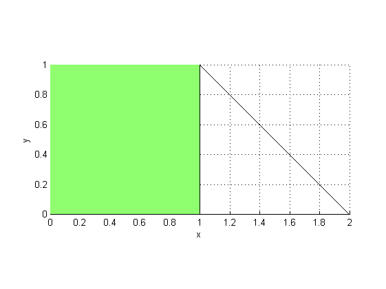
The supported element types are the following
- 12 - two noded 1D LINE element
- 23 - three noded 2D TRIA element
- 24 - four noded 2D QUAD element
- 34 - four noded 3D TETRA element
- 36 - six noded 3D PENTA element
- 38 - eight noded 3D HEXA element
As can be seen, the first number refers to the dimensionality of the element, and the second number describes the number of nodes.
In some cases it is useful to convert the IDs in the matrix mesh.Elements to indices that refer to the lines of the matrices mesh.Materials, mesh.Properties and mesh.Nodes. This can be done by using the function drop_IDs:
elem = drop_IDs(mesh)
elem =
1 24 1 1 1 2 3 4
2 12 2 1 3 5 0 0
The results show that the first element's material is in the first line of mesh.Materials, its property is the first property defined, and its nodes are the first four entries in the matrix mesh.Nodes:
quadnodes = mesh.Nodes(elem(1,5:end),:)
quadnodes =
1 0 0 0
3 1 0 0
5 1 1 0
14 0 1 0
Selecting nodes and elements from a mesh
General node and element selection is performed using the function mesh_select. In the following example, a sphere mesh is created, and the nodes and elements satisfying the condition 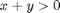 are selected.
sphere = create_sphere(1, 10) [nodind, elind] = mesh_select(sphere, 'x+y>0', 'ind', 'all'); sphere.Elements = sphere.Elements(elind,:); figure; plot_mesh(sphere); view([20 30]);
sphere =
Nodes: [9261x4 double]
Elements: [8000x12 double]
Properties: [1 1 0 0 0 0]
Materials: [1 1 1 1 0 0]
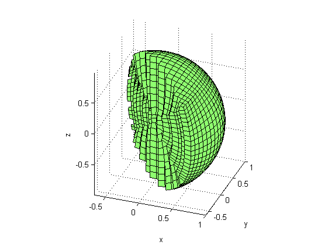 Note that the selection was performed by using the options 'ind' and 'all'. By selecting 'ind', the node and element indices and not the IDs are are returned. By using 'all', an element is selected if all of its nodes satisfies the expression.
Also note that the elements not satisfying the expression were excluded from the model, but the nodes were not. In order to drop these nodes, the function drop_unused_nodes can be used:
[halfsphere, keepind, dropind] = drop_unused_nodes(sphere); removedID = sphere.Nodes(dropind,1);
A further simplified mesh selection method is implemented in the function mesh_section. This function can be used to easily select a rectangular section of a mesh. In the following example, the 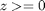 section of a cat's eye model is selected and plotted.
cat = create_catseye(1,10); tol = 1e-3; % tolerance in defining section limits limits = [ % xmin ymin zmin -Inf -Inf -tol % xmax ymax zmax +inf +inf +inf ]; cat = mesh_section(cat, limits); figure; plot_mesh(cat);view([135 30]);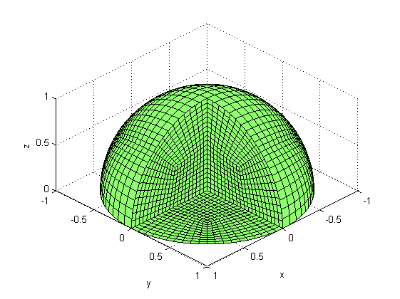
Combining and splitting meshes
Meshes can be combined using the function join_meshes. The function is demonstrated in the following example, where circle quadrants are joined with slabs in order to obtain a rounded square mesh with a hole.
L = 4; % inner side length N = 10; % number of elements alog the inner side slab = create_slab(L, N); slab = translate_mesh(slab, [L/2, -L/2]); quadrant = create_circle_quadrant(L, N); quadrant = translate_mesh(quadrant, [L/2, L/2]); part = join_meshes(slab, quadrant); part = join_meshes(part, rotate_mesh(part, pi/2, [0 0 1])); part = join_meshes(part, rotate_mesh(part, pi, [0 0 1])); figure; plot_mesh(part);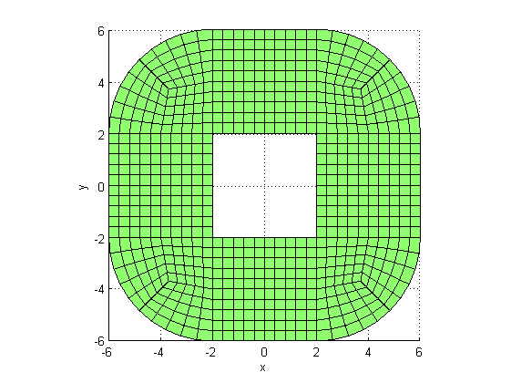
Note that the mesh part contains several properties and materials. This is becase at each join_meshes operation, all the nodes, materials and properties of the original meshes are added separately to the resulting mesh without checking coincidence, and all the IDs are renumbered starting from 1. Coincident nodes can be merged using the command merge_coincident_nodes. Coincident properties and materials do not need to be merged.
[part, keepind, dropind] = merge_coincident_nodes(part); part
part =
Materials: [1 1 1 1 0 0]
Properties: [1 1 0 0 0 0]
Nodes: [760x4 double]
Elements: [700x12 double]
the vectors keepind and dropind contain the indices of the kept and dropped nodes in the original mesh.
Meshes containing independent submeshes can be split using the function split_independent_meshes. In the following example, a section of a ring is split into independent parts.
line = create_line((1:.1:2).'); % generating line ring = revolve_mesh(line, pi/50, 100, [0 0 1], [0 0 0]); % create ring section = mesh_section(ring, [-.5 -Inf -Inf; +.5 Inf Inf]); % section section = drop_unused_nodes(section); parts = split_independent_meshes(section); % split meshes % plot parts separately figure; plot_mesh(parts(1)); %plot first part plot_mesh(parts(2)); % plot second part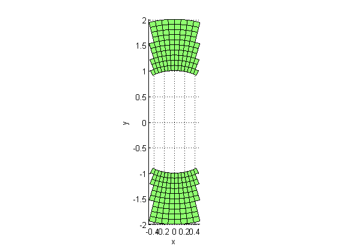